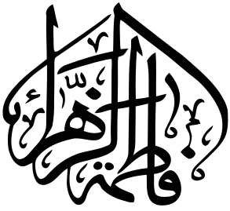
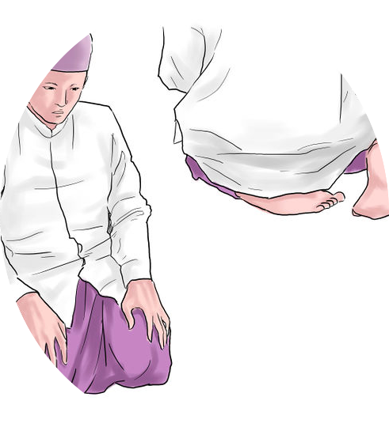

2nd Rakaat
Step 9

Recite the At-Tahiyyat at the end of the second rakaat and the last rakaat:
At-tahiyyatu lillahi wa salawatu wa tayyibatu asalaamu alayka ayyuhan nabiyyu wa rahmatullahi wa barakatuh asalamu alayna wa ala ibadillah saliheen ashadu an la ilaha illah allah wa ashhadu anna Muhammadan abduhu wa rasuluh.